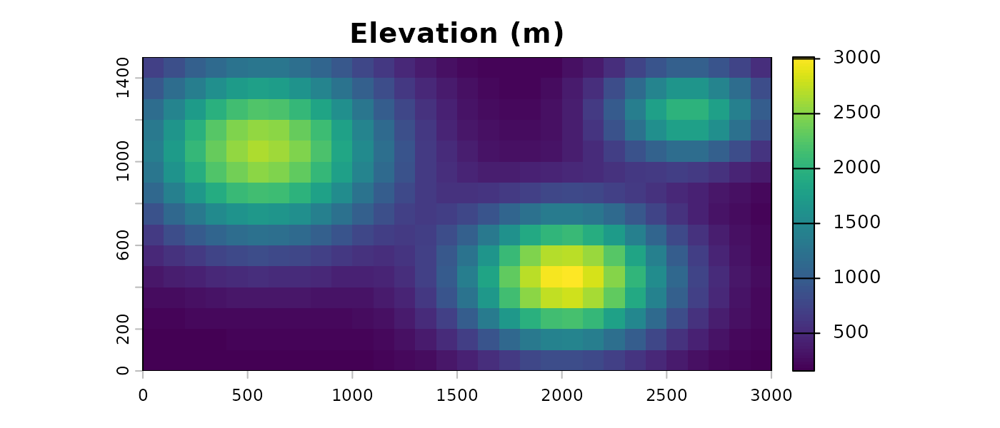
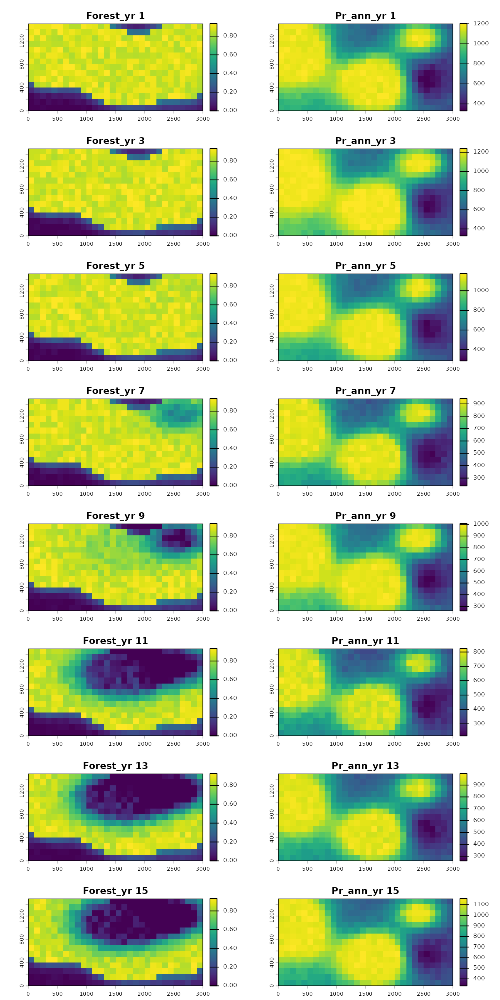
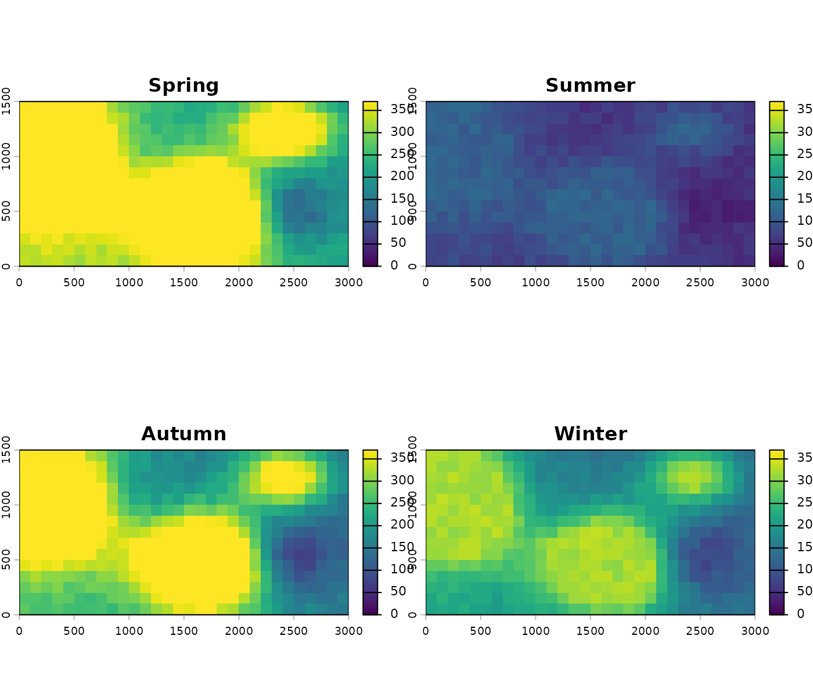
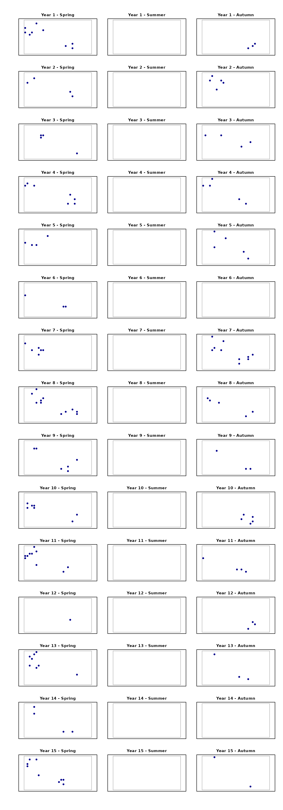

Summary
Description
To keep the package vignettes self-contained, TemporalModelR ships a small synthetic dataset that the entire workflow can run against in seconds, without requiring you to download external occurrence or environmental data. The dataset is deliberately small but complete, including everything a real temporally explicit SDM workflow would need. The small dataset is meant to represent a simple but changing landscape to visualize the utility of this package and the variety of the types of data that it may be useful for.
This vignette describes the dataset in detail so that the workflow
vignettes (Preprocessing temporally
explicit data, Modeling, Postprocessing) can refer back to a
single source for what’s in inst/extdata/ and
data() rather than explaining the dataset through each
other vignette. If you’re working through the package for the first
time, read this first.
Overview
The included dataset is generated over the following spatial and temporal dimensions:
Spatial. A 15 × 30 cell grid at 100 m resolution, giving a 3000 m × 1500 m study area in a custom synthetic local CRS (a Transverse Mercator projection anchored at the equator and prime meridian).
Temporal. Fifteen years (labelled 1 through 15) and four seasons (Spring, Summer, Autumn, Winter).
The example landscape has three primary environmental variables driving suitability for our example species: Elevation, Forest Cover, and Precipitation. Elevation is representative of a temporally static variable which will not change over the 15 year study period. Forest cover is representative here of a temporally dynamic variable which changes across time and is measured at a single time step (annually). Precipitation is representative here of a temporally dynamic variable which is measured at compound time steps (here, measurements are made seasonally so that each precipitation measurement is associated with both a year and season). We also include a simplified ‘annual precipitation’ dataset for alternative simplified examples.
Our ‘example species’ can be found in mid-high elevations, in areas of high forest cover, and moderate to high precipitation.
Over the time period of the example dataset, we deliberately show an example of deforestation on the landscape in our forest cover dataset, as well as interannual variability and noise in our precipitation dataset. These allow for us to visualize areas of suitability loss over time in addition to the interannual dynamics of suitability over time. These signals are intentionally placed to highlight TemporalModelR’s ability to show this spatiotemporal variability on the landscape.
Landscape rasters
The bundled raw rasters can be found in
inst/extdata/rasters_raw/ and contain:
-
elevation.tif— single static raster (one layer) -
forest_cover_<yr>.tif— 15 annual rasters -
prseas_<yr>_<season>.tif— 60 seasonal rasters (15 years × 4 seasons) -
pr_ann_<yr>.tif— 15 annual rasters, computed as the sum of the four seasonal layers within each year
These can all be loaded from the system for any example analyses:
library(TemporalModelR)
library(terra)
#> terra 1.9.27
library(sf)
#> Linking to GEOS 3.12.1, GDAL 3.8.4, PROJ 9.4.0; sf_use_s2() is TRUE
raw_dir <- system.file("extdata/rasters_raw",
package = "TemporalModelR")Workflow vignettes typically use one of two predictor sets:
-
Annual workflow:
elevation,forest_cover(annual), andpr_ann(annual precipitation) to illustrate the general utility of each function. -
Compound time-step workflow:
elevation,forest_cover(annual), andprseas(seasonal precipitation) to illustrate the function’s ability to work with variables measured at more complex compound time steps (precipitation measures associated with specific seasons within each specific year)
Elevation
The elevation surface is fully static across the time series and is the only purely static predictor:

Forest cover and annual precipitation across years
Forest cover and annual precipitation are the two dynamic annual predictors. Plotting them side by side with each row representing one year makes the temporal change in each visible at the same time. We visualize every other year below:
years_to_plot <- seq(1, 15, by = 2)
forest_files <- file.path(raw_dir,
paste0("forest_cover_", years_to_plot, ".tif"))
pr_ann_files <- file.path(raw_dir,
paste0("pr_ann_", years_to_plot, ".tif"))
### Interleave forest and precip so each row of the plot grid is one year
forest_pr_paths <- c(rbind(forest_files, pr_ann_files))
forest_pr_stack <- rast(forest_pr_paths)
names(forest_pr_stack) <- c(rbind(paste("Forest_yr", years_to_plot),
paste("Pr_ann_yr", years_to_plot)))
plot(forest_pr_stack, nc = 2)
The left column shows forest cover thinning in two locations: a gradual loss on the northeast hill starting around year 4 and a faster loss in a southwest-central patch starting around year 7. The right column shows annual precipitation with a slight overall decline plus the wet (year 3 and year 9) and dry (year 11) years that stand out from their neighbours.
Seasonal precipitation within a year
Seasonal precipitation multiplies the annual base by season: Spring and Autumn are the wettest times of year, Summer is driest, and Winter is intermediate. Year 1 across all four seasons:
season_names <- c("Spring", "Summer", "Autumn", "Winter")
prseas_y1_stack <- rast(file.path(raw_dir,
paste0("prseas_1_",
season_names, ".tif")))
names(prseas_y1_stack) <- season_names
plot(prseas_y1_stack,
range = c(0, max(values(prseas_y1_stack), na.rm = TRUE)))
The spatial structure is preserved across seasons; the seasons differ in overall magnitude.
Occurrence data
We also generated an example dataset of 150 ‘species occurrence locations’ across the 15 year / 4 season time frame. The example points represent a high-elevation forest specialist with moderate to high moisture requirements.
First, points are generated for every location/year/season combination above a simple threshold for each variable of interest, with only combinations meeting all four environmental filters counting as a candidate occurrence site:
- Elevation > 1200 m
- Forest cover > 0.75
- Annual precipitation > 300 mm
- Seasonal precipitation > 150 mm (same threshold for Spring, Summer, and Autumn)
Winter is excluded from sampling entirely, so the filter is applied only across the three remaining seasons (Spring, Summer, Autumn) × 15 years = 45 candidate year-season slices.
We apply spatial and temporal autocorrelation to a random sampling algorithm to subset our candidate points across time into only 150 samples, resulting in a clustered, ecologically plausible occurrence dataset distributed across space, year, and season, with realistic survey biases.
The final example points database can be called from the system:
pts_file <- system.file("extdata/points/synthetic_occurrence_points.csv",
package = "TemporalModelR")
pts <- utils::read.csv(pts_file)
head(pts)
#> x y year season pres
#> 1 2250 350 1 Autumn 1
#> 2 2050 250 1 Autumn 1
#> 3 2350 450 1 Autumn 1
#> 4 250 850 1 Spring 1
#> 5 850 1050 1 Spring 1
#> 6 50 1150 1 Spring 1
nrow(pts)
#> [1] 150
table(pts$year, pts$season)
#>
#> Autumn Spring
#> 1 3 9
#> 2 5 4
#> 3 4 4
#> 4 5 7
#> 5 5 4
#> 6 0 3
#> 7 10 6
#> 8 5 11
#> 9 3 6
#> 10 5 7
#> 11 4 10
#> 12 3 1
#> 13 3 8
#> 14 0 4
#> 15 2 9To see the distribution of points across both space and time, plot each year-season combination on its own panel. Each row of the grid corresponds to one of the 15 years; each column corresponds to one of the three sampled seasons (Spring, Summer, Autumn). Empty panels indicate year-season combinations with no points:
seasons <- c("Spring", "Summer", "Autumn")
study_extent <- ext(0, 3000, 0, 1500)
par(mfrow = c(15, 3),
mar = c(1.5, 1.5, 1.5, 0.5),
oma = c(2, 2, 2, 1))
for (yr in 1:15) {
for (sea in seasons) {
sub <- pts[pts$year == yr & pts$season == sea, ]
plot(NULL,
xlim = c(0, 3000), ylim = c(0, 1500),
asp = 1, xaxt = "n", yaxt = "n",
xlab = "", ylab = "",
main = paste0("Year ", yr, " - ", sea),
cex.main = 0.9)
rect(0, 0, 3000, 1500, border = "grey70")
if (nrow(sub) > 0) {
points(sub$x, sub$y, pch = 19, cex = 0.7, col = "darkblue")
}
}
}
Together, this points dataset and the rasters above make up the landscape and species occurance data for all of the example applications presented in this package’s vignettes.
Pre-computed objects and other bundled files
Alongside the raw inputs, the package ships pre-computed outputs of
the full preprocessing and modeling pipelines as data()
objects to be called into vignettes. Two sets exist, one for the annual
workflow and one for the seasonal workflow. The workflow to generate
these is shown in the package vignettes, but stable saved copies are
included in the package data so users can jump straight to any phase of
the workflow without re-running upstream steps.
Pre-computed data() objects
-
tmr_partition_annual— output ofspatiotemporal_partition(). A list containing$folds(a data frame mapping each occurrence point to one of four cross-validation folds),$points_sf(the rarefied and extracted points as ansfobject, with environmental values attached),$voronoi_folds(the spatial Voronoi blocks used to assign folds, also ansfobject),$summary(per-fold point counts), and$plots(diagnostic ggplot objects). Built with 2 spatial folds × 2 temporal folds. -
tmr_absences_annual— output ofgenerate_absences()applied totmr_partition_annual. A list with$pseudoabsences(ansfobject containing 2:1 ratio buffer-sampled pseudoabsence points with environmental values extracted at the matching year),$plots, and$summary. Use it directly as thepseudoabsence_resultargument in any of the four presence/absence model builders. -
tmr_glm_annual— output ofbuild_temporal_glm()applied totmr_partition_annualandtmr_absences_annualwith formula~ forest_cover + pr_ann + elevation, logit link, and TSS threshold selection. A list of class"TemporalGLM"containing$models(four fittedglmobjects, one per fold),$thresholds(the TSS-optimal threshold per fold),$model_formula,$link,$model_vars,$fold_training_data,$fold_test_metrics(per-fold AUC, TSS, sensitivity, specificity), and$plots. Pass it togenerate_spatiotemporal_predictions()as themodel_resultargument. -
tmr_predictions_annual— output ofgenerate_spatiotemporal_predictions()applied totmr_glm_annual, projected across all 15 years (one annual prediction stack per fold). A list with$timestep_metrics(per-year, per-fold E-space and G-space evaluation metrics including CBP),$overall_summary(across-year aggregates),$prediction_files(paths to the per-fold prediction tifs from the build run), and$model_type. Useful forplot_model_assessment()and for downstream pattern analysis. -
tmr_partition— partition built from rarefaction at year-season scale and extraction withprseas_YEAR_SEASON. Same list structure as the annual version, but with more points retained because spatiotemporal rarefaction at the seasonal scale preserves multiple observations from the same pixel in different seasons. -
tmr_absences— pseudoabsences fortmr_partition, generated at the year-season scale so each pseudoabsence is associated with a specific year and season and has the corresponding seasonal predictor values attached. -
tmr_glm—build_temporal_glm()fit with formula~ forest_cover + prseas + elevationandtime_cols = c("year", "season"). -
tmr_predictions— predictions fromtmr_glmprojected to all 15 years for the Spring season only (15 prediction layers per fold). The Spring-only projection is whatinst/extdata/predictions/contains in raster form (see below).
Intermediate raster and point files
Additionally, inst/extdata/ contains raster and point
files corresponding to intermediate steps throughout various vignettes.
These are bundled so that users may call them directly and avoid
re-running previous analyses just to produce them. Each subdirectory can
be loaded from the system with system.file():
pred_dir <- system.file("extdata/predictions",
package = "TemporalModelR")
list.files(pred_dir, pattern = "\\.tif$")The bundled subdirectories are:
-
inst/extdata/rasters_aligned/— outputs ofraster_align()on the raw rasters: every layer reprojected and masked to the reference grid. -
inst/extdata/rasters_scaled/— z-scored rasters for the seasonal workflow (forest_cover,prseas,elevation), produced byscale_rasters(). -
inst/extdata/rasters_scaled_annual/— z-scored rasters for the annual workflow (forest_cover,pr_ann,elevation). -
inst/extdata/predictions/— 15 per-year fold-vote prediction rasters from the seasonal workflow’sgenerate_spatiotemporal_predictions()call. Direct input tosummarize_raster_outputs(). -
inst/extdata/binary/— outputs ofsummarize_raster_outputs()applied to the prediction rasters above:-
consensus_stack.tif— 15-layer binary consensus stack (one layer per year, suitable where ≥3 of 4 folds agree) -
frequency_raster.tif— single-layer raster giving the proportion of years each pixel was classified as suitable
-
-
inst/extdata/points/— the rawsynthetic_occurrence_points.csv(and a matching shapefile), plus the intermediate point files from rarefaction, extraction, and scaling for both workflows:-
Pts_annual_*— rarefied points at the annual scale -
Pts_seasonal_*— rarefied points at the year-season scale -
extracted_annual_*— extraction outputs at the annual scale (raw values, scaled values, and scaling parameters) -
extracted_seasonal_*— extraction outputs at the year-season scale
-